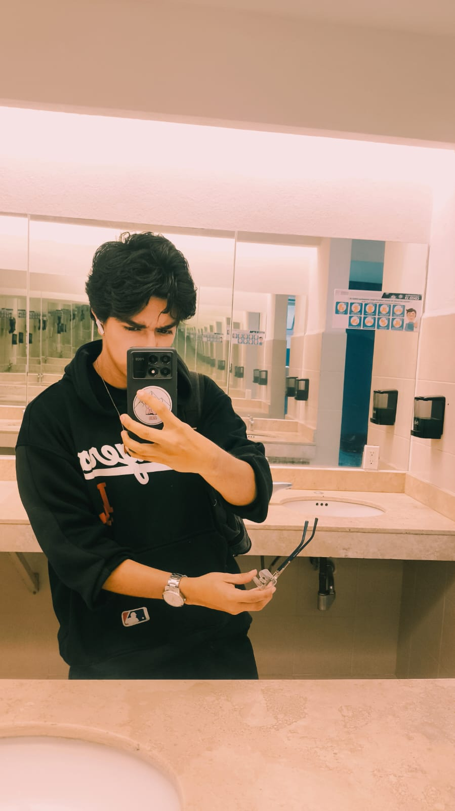

Josué Emmanuel López López
Estudiante de Ingeniería en TI | 8.º Semestre
Me apasiona la música y los videojuegos. En mi tiempo libre disfruto tocar el piano y asistir a clases de canto, combinando mi lado creativo con mi formación técnica.
Competencias y Perfil
- Carrera: Ingeniería en Tecnologías de la Información (8.º semestre).
- Hobbies: Música y videojuegos.
- Instrumento: Piano.
- Seguridad Informática: Curso de ciberseguridad amateur impartido por Cisco, además de conocimientos sólidos sobre redes y su funcionalidad, adquiridos en materias universitarias como PIC I y II.